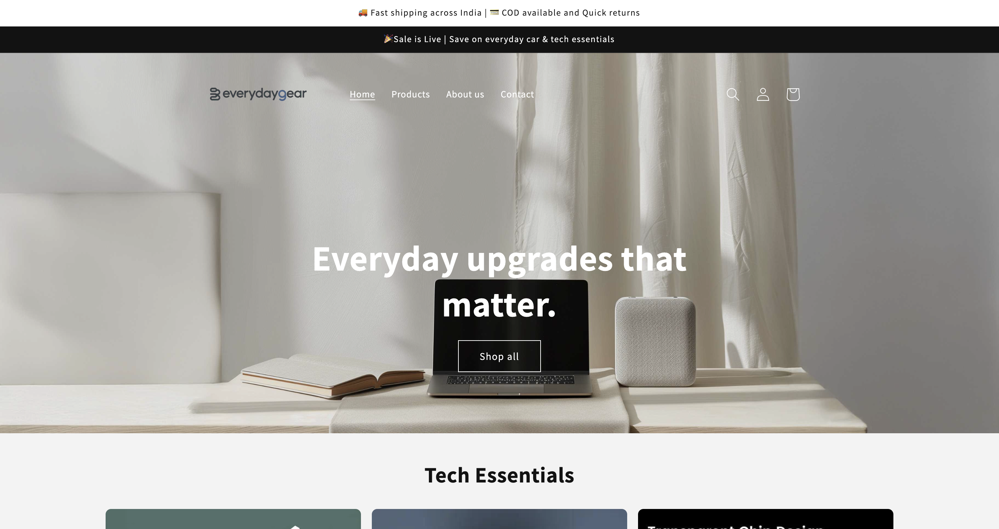

EverydayGear.in
A complete e-commerce platform for daily essentials, featuring a seamless shopping experience and modern design.
Motivated tech enthusiast passionate about software development, Android/iOS technology, and building innovative solutions.
I am a tech-focused enthusiast with a strong interest in software development across Android and iOS ecosystems. I enjoy learning new technologies and working on real-world problems through hands-on projects. My focus is on building practical and scalable solutions while continuously improving my technical skills through experimentation and self-learning.
Alongside development, I have an interest in Digital Marketing and SEO. I spend time understanding how applications and digital products reach users, and I work on areas such as Search Engine Optimization (SEO), Social Media Optimization (SMO), content planning, and market analysis to improve visibility and organic reach. I worked at Digehub, where I was involved in writing SEO-optimized content, performing keyword research, and supporting on-page SEO and organic growth efforts. This helped me understand how digital products and applications reach the right audience.
Having exposure to both development and digital marketing helps me approach projects more realistically. I not only focus on building applications but also on how they can be discovered, used, and improved based on user reach and performance. I am looking for opportunities where I can continue learning, gain practical experience, and contribute to technically driven and growth-oriented teams.
• Writing and publishing SEO-optimized blog articles.
• Conducting keyword research and competitor analysis.
• Supporting on-page SEO and content optimization efforts.
• Managing Digehub’s social media accounts and creating captions.
• Supporting organic growth strategies across digital platforms.
• Managed digital presence and targeted student enrollment for IT training courses.
• Created visual content promoting Python, C, C++, and web development courses.
• Developed organic content strategies to increase reach.
• Designed course promotion campaigns with effective CTAs and hashtags.
• Analyzed engagement trends to support data-driven improvements.
• Collaborated on research for financial tools and market trends.
• Gained experience in fintech product management and startup dynamics.
A complete e-commerce platform for daily essentials, featuring a seamless shopping experience and modern design.
An urban streetwear brand store with a bold, minimalist aesthetic and integrated payment gateways.
A curated seasonal store focusing on winter apparel, blending functionality with high-end fashion design.

A comprehensive guide explaining the fundamentals of Social Media Optimization (SMO) and key strategies.
Read Article
An expert-curated list of the top free tools for conducting thorough on-page and technical SEO audits.
Read Article
WhatsApp is testing a new feature allowing users to view smartwatches and wearables linked to their account.
Read ArticleAn in-depth look at OpenAI’s innovative 'Skills' feature and how slash commands revolutionize AI usage.
Read ArticleOpenAI warns that prompt injection attacks are a structural threat to AI agents and has developed an automated 'attacker' for testing.
Read ArticleOpenAI has launched a formal review system for third-party apps, turning ChatGPT into a full application platform.
Read Article